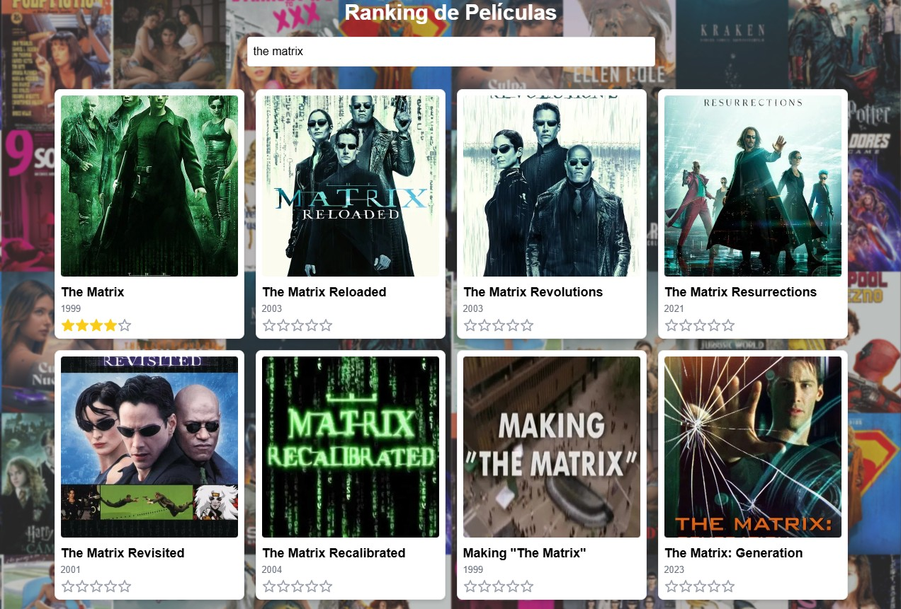

Desarrolladora Junior · Buenos Aires
Luana Candela Galván
Estudiante de Computación orientada al desarrollo de software. Proyectos reales, formación técnica y muchas ganas de crecer.
Desarrollo Web
Java & POO
React
Aprendizaje continuo
Reemplazá con tu foto
Sobre mí
Construyo cosas reales mientras aprendo.
Soy Luana, estudiante de último año de la Secundaria Técnica en Computación (CABA). Desde que empecé a programar, entendí que la mejor forma de aprender es construyendo cosas que funcionen de verdad y que alguien pueda usar.
Tengo proyectos web publicados en producción, participé en la Copa Robótica Argentina 2025 donde mi equipo llegó a semifinales, y sigo sumando habilidades cada semana. Me considero responsable, organizada y siempre dispuesta a pedir ayuda cuando no sé algo.
Busco mi primera experiencia profesional en un equipo donde pueda aportar, seguir formándome y demostrar que el potencial bien dirigido vale tanto como los años de experiencia.
Habilidades
Tecnologías y competencias
Desarrollo web
- HTML5
- CSS3
- JavaScript
- React
Programación
- Java
- C
- MicroPython
- Arduino
Datos y sistemas
- SQL
- Redes
- Git / GitHub
- Hardware
Competencias
- Trabajo en equipo
- Resolución de problemas
- Pensamiento lógico
- Aprendizaje continuo
- Organización
Intermedio
Básico–Intermedio
En aprendizaje
Proyectos
Lo que construí
Tres proyectos publicados en producción, accesibles en cualquier dispositivo.


Formación
Recorrido académico
Secundaria Técnica en Computación
Orientación: Desarrollo de Software y Sistemas Informáticos · CABA
Último año en curso. Formación completa en programación, bases de datos, redes, sistemas operativos, hardware y proyectos integradores desde primer año.
Copa Robótica Argentina — Competencia Nacional
Equipo de 5 integrantes · 3.° puesto regional · Semifinalista nacional
Diseño, programación y pruebas de un robot autónomo en equipo. Trabajo colaborativo bajo presión con resultados concretos en competencia oficial.
Proyectos web publicados
Desarrollo autodidacta · GitHub Pages
Diseño y despliegue de aplicaciones funcionales y accesibles en producción: sistema de informes, plataforma de salud y ranking interactivo.
Cursos y certificaciones en curso
Actualmente continúo ampliando mi formación mediante cursos y certificaciones vinculadas al desarrollo de software y tecnologías web, sumando nuevas herramientas a mi perfil técnico de forma constante.
Contacto
¿Tenés un equipo donde pueda aprender y aportar?
Estoy disponible para prácticas profesionales, empleo part-time o cualquier oportunidad donde el potencial valga tanto como la experiencia. Escribime sin compromiso.